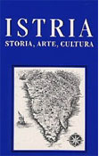

 Despre existența unor comunități românești, chiar temporare, la Fiume, Pola, Bocche del Cattaro, Ragusa și în alte porturi adriatice se cunosc îndeobște puține lucruri, nefiind făcute, până în prezent, cercetări sistematice în arhivele locale și în presa publicată în zonă. Datele statistice și istorice referitoare la ei lipsesc, ei fiind îndeobște încadrați la “și alții”. De aceea, chiar și puținele informații avute sunt de dată relativ recentă – din anii premergători Marii conflagrații mondiale – dacă nu luăm în considerare comunitățile de istroromâni (cici, țințiri, țințari, rumeri, vlahi etc.) din zonă și despre care s-a scris în lucrări apărute în Trieste, ca și în literatura de specialitate românească și străină, mai ales începând cu secolul al XVIII-lea.
De cele mai multe ori, când se vorbește despre românii trăitori atunci în monarhia austriacă sau, după dualism, în cea austro-ungară, este vorba în special despre militarii care au aparținut Marinei imperial-regești: ei proveneau din toate ținuturile aparținătoare Imperiului, începând cu Bucovina, Maramureșul, Transilvania, Părțile Ungurene (Partium) și terminând cu Banatul. Mai puțin se știe că și din România Mică au fost emigranți care s-au stabilit pentru un timp în frumoasele orașe adriatice multietnice, găsindu-și acolo un rost, sau că mulți au fost doar în vilegiatură sau în trecere, pentru scurte intervale de timp. Înșiși suveranii României Mici, regele Carol I și regina Elisabeta, s-au oprit la Abbazia (astăzi Opatjia, în Croația) și în alte locuri și trecerea lor nu a rămas ascunsă în uitare: câteva străzi le poartă și acum numele.
Jurnalul lui Titu Iuliu Victor Stoicovici
De curând, prin bunăvoința doamnei Corina Marilena Gorcea din Cluj am intrat în posesia unui jurnal redactat de bunicul domniei sale, Titu Iuliu Victor Stoicovici, în vara anului 1944 la Arad și reluat, prin adăugirea câtorva note, la Cluj, în ianuarie 1948.
Așa cum ne informează autorul jurnalului, s-a născut la Pecica, Arad, în 10 iulie 1875, din părinții George Stoicovici, fost prim-avocat al bunurilor de Coroană, și al Mariei Stoicovici, născută Popovici. Familia Stoicovici, din Pecica Română, își cunoștea originile din 1720, când se năștea Mihai Stoicovici, căsătorit cu Marta, străbunicii autorului. Părinți i-au fost Arsenie Stoicovici (născut la 1823), preot ortodox, și Elena Popescu. În afara viitorului memorialist, părinții au mai avut patru copii: Maria, George, Aurel, Cornelia, care s-au bucurat de o educație îngrijită, părinții fiind oameni cu o stare materială bună: câteva case în Pecica, pământ arător îndestul, pruniște la Ciala, în marginea Aradului, vie, animale...
După terminarea școlii primare, Titu Iuliu Victor Stoicovici a urmat cursurile unui liceu din Arad, iar după terminarea acestuia a dorit să îmbrățișeze meseria de farmacist, pregătindu-se în acest sens în farmacia lui Vojtec Kalman din Pecica (în 1893), de unde a fost repartizat la farmacia cea nouă, a unui român, Ioan Roxin, din aceeași localitate, și a urmat o altă perioadă de practică în farmacia lui Foldes Kelemen din Arad. Aici îl cunoaște pe dr. Sida, fiul notarului din șiria, care îl sfătuiește să-și aleagă o altă meserie, mai practică și, având acceptul tatălui, s-a îndreptat spre meseria de notar. Citind într-un ziar local că se căuta un practicant la notariatul din Sânnicolaul Mic, condus de șvabul Harold, la 1 aprilie 1894 și-a luat postul în primire. În scurt timp a învățat ceea ce trebuia să știe, așa încât putea lua asupra sa toate grijile lui Harold, care putea merge liniștit la Arad, cu trăsura, să stea la cafenea și de unde se întorcea numai seara. Munca era intensă, dar și bine remunerată, florinul având putere mare de cumpărare. Localitatea, curat românească, se afla lângă Aradul Nou; dar, apune autorul, “petrecerile luxoase ale românilor din Banat, dar și lenea și nepăsarea” au făcut în așa fel încât parte dintre pământurile lor fertile să fie vândute șvabilor, care fiind oameni harnici, cultivau zarzavaturi și le vindeau pe piața Aradului, de la care le cumpărau româncele din jurul orașului, în loc să-și cultive pământul mănos.
Localitatea număra o seamă de intelectuali români: Vasile Adamovici, funcționar la judecătoria rurală Aradul Nou, preotul George Romanul, viitor protopop de Deva, și familiile lor care se manifestau ca buni români și organizau coruri școlare și coruri țărănești.
În acești ani s-au căsătorit cele două surori Maria (Marica) cu dr. George Roșca, medic în Sarafola (jud. Torontal), și Cornelia (cu August de Herbay, notar cercual în Vețel, jud. Hunedoara, aparținând unei vechi familii nobiliare românești). La nunta celei de-a doua au luat parte Ștefan Cicio-Pop1 cu familia, frații și surorile mirelui: Iuliu, director de bancă, Silviu, “pe atunci maior, mai târziu general”, Demetru, căpitan, mort ca maior pe câmpul de luptă în Primul război mondial, Alexandru, comerciant, Emil, cadet, și sora lor, Mina, căsătorită cu inginerul Răzvan.
De la Sânnicolaul Mic, Titu Iuliu Victor Stoicovici s-a mutat pentru 3 luni la notarul Hartman din Felnac (pe atunci Fenlak), pe linia Mureșului, la circa 15 km mai jos de Arad, “într-o comună românească, dar mulți locuitori erau sârbi fără să cunoască limba românească și fără să aibă biserică sârbească”!
La rugămintea fratelui său Aurel, notar la Câinelul de Jos (Hunedoara), a părăsit Felnacul și pe Adela, frumoasa fiică a notarului, și s-a dus să îl ajute pe fratele său, nu fără să regrete “Banatul drăguț și bogat” și părinții care au rămas în grija fratelui George. Acolo se mutase și Cornelia cu Gusti de Herbay (la câțiva km, la Vetel), așa încât cei trei frați se puteau vizita adesea, mai ales la sfârșit de săptămână, când “Cornelia ne cânta la pian, iar noi, bărbații, discutam și cântam cu Cornelia, care de dragul nostru a pregătit torturi, prăjituri, ne servea cu mere și pere, cu compoturi etc. Gusti era cu stare bună, avea case mari sub coasta dealului, cu grădină mare, avea cai, vaci, boi, pământuri, dar având un notariat care stătea din 8 comune avea un venit bun și plătea regulat datoriile”.
La solicitările cumnatului, notarul Herbay, (care avea la Leșnic un secui, Peter Josef, care făcea mereu denunțuri împotriva sa, iar în cancelarie pe ungurul Kerestes, bețiv) consimte să-l ajute pe acesta și nu pe fratele său Aurel; de aceea la 1 februarie 1896 ocupă, ca practicant, postul de la Vețel, iar în decembrie a fost admis la examenul de notar, obținând diploma mult dorită, câștigând dreptul de “conducere a tuturor agendelor în limba română și maghiară”. Pe baza examenului devine cel mai tânăr sub-notar din județul Hunedoara (la 22 ani), fiind apreciat de superiori, dar și de populația comunelor care țineau de Vețel: Mintia, Herepea, Cain, Vulcez, Leșnic, Boiabarz, Merișor: “Aceste comune trebuia să le vizitez de două ori pe săptămână, să ascult dorințele și păsurile populației, să rezolv chestiunile oficiale, să încasez impozitele, să fac pace între cei ce se pârau, să țin evidența militară despre toate mișcările ce se făceau, a celor chemați în armată, a celor lăsați la vatră. Acestea erau trimise la autoritățile militare, la linie, adică la armata comună a austriecilor și a honvezilor. Într-un cuvânt, toată administrația comunelor, culturală, sanitară, militară”.
În afara lefii de stat și de la comune, Victor Stoicovici mai primea atenții din partea locuitorilor: “caș, brânză, ouă” în așa fel încât cumnatul de Herbay devenea câteodată gelos, dar avea întotdeauna cu comportament corect față de el. În sfârșit, și al patrulea frate, George, va ocupa un post de practicant și scriitor la pretura din Ilia, așa că, în afara surorii Maria (Marica), toți frații se mutaseră în Ardeal.
În această perioadă, doliul nu iartă numeroasa familie: mai întâi moare de apoplexie doctorul Roșca, cumnatul lor, apoi Aurel, înmormântat în cimitirul de lângă biserica ortodoxă din Vulcez și, în 1898, tatăl lor, la Pecica, la vârsta de 75-76 ani.
Notariatul din Vețel avea 8 comune, cam 200-300 numere de casă. Acolo exista și mai există încă un castru roman, Vitelium, care își dovedea existența prin numeroase monede, piese ceramice, statuete de bronz, iar populația, greco-catolică le aduna mai ales primăvara și le dona Muzeului din Deva. Vețelenii se ocupau cu comerțul cu lemn de foc. “Băștinașii sunt nobili având nume ungurești, se țineau de regimentul husarilor secui de la Dobra, dar în pofida acestor nume ungurești pe care le aveau, erau cei mai înfocați patrioți români, să nu le fi spus că-s unguri că se supărau tare mult...”, observă Stoicovici cu nedisimulată mândrie.
Aici cunoaște viața sătenilor, ia parte la grijile și bucuriile lor, este acceptat atât în familiile ortodoxe cât și în cele greco-catolice. La Mintia, fiul primarului Lupșa Iosif (el însuși fiu al preotului greco-catolic), de aceeași vârstă cu autorul memorialului, lipsește de acasă de vreo șapte ani, fiind student la Roma la De Propaganda Fide (mai târziu va ajunge episcop militar) și părinții își șterg pe furiș câte o lacrimă când Victor le calcă pragul!
După moartea neașteptată a lui Aurel, a preluat postul de notar (cu dispensă, fiindcă nu împlinise 24 ani!) în Câinelul de Jos, unde populația era extrem de needucată și, la beție, îi bătea pe preoți, alungându-i din satele Câinel, Fornadia și Sulighetea. Dar cu el s-a comportat exemplar, câțiva locuitori spunându-i încă de la început: “Nu-ți fie frică de noi, că deși suntem bătăuși în crâșmă, cu d-ta, d-șorule Victor, vom fi buni, ca și cu Aurel, fiindcă am auzit că și d-ta ești bun cu oamenii, că doar numai Mureșul ne desparte de Vețeleni!”
La împlinirea vârstei de 24 ani (conform legii) la Câinel s-au organizat alegeri pentru numirea “deplină” a notarului: s-a înscris vreo 7-8 candidați. Fiecare comună avea 12 membri și 3 supleanți și aceștia alegeau notarul (și primarul, de altfel). La alegerea notarului, președinte al comisiei era prim-pretorul plasei: alegerea se făcea cu majoritate de voturi, apoi “Primea jurământul din mâna prim-pretorului, se întocmea cuvenitul proces verbal care apoi se înainta la Prefectură și la Ministerul de Interne pentru a se stabili leafa și pentru a fi luat în evidență și la fondul de pensii”.
Prim-pretorul Csulay Lajos, “un om foarte bun și corect”, îl simpatizează pentru calitățile dovedite și îl susține atrăgându-i atenția să-i “dovedească poporului prin munca corectă și nepărtinitoare” că a meritat încrederea. Și el va face tot ce-i stă în putință să dovedească acest lucru și, oamenilor, și prim-pretorului, de care va rămâne atașat tot restul vieții.
După puțină vreme un alt doliu se va abate asupra familiei: Cornelia va muri în urma unui avort, lăsându-l pe Gusti de Herbay și cei doi copii în pragul disperării. Dar viața merge înainte, și mama sa, împreună cu Minodora Candrea, soția pretorului din Brad (cunoscută la Câinel), pun la cale însurătoarea lui Victor, după găsirea unei fete potrivite! Este vorba de o nepoată a Minodorei, Elena Macaveiu din Bucium Sașa, de vreo douăzeci de ani, tocmai bună de măritat! Mai ales că și mirele împlinise 26 de ani, făcuse 8 luni de armată la Regimentul 33 Infanterie Arad (fiind susținător de familie) și, împreună cu fratele său George, notar în Burjuc, însoțiți de o altă trăsură plină cu rude, a plecat să ceară mâna fetei, la casa socrului, unde erau așteptați de o familie numeroasă. “Fidanțarea” s-a făcut la biserica greco-catolică din Bucium Sașa, iar nunta la biserica ortodoxă din Bucium-Poieni, la 24 august 1901; urmează apoi primele îmbogățiri ale familiei prin nașterea fetiței Aurora – Cornelia (nășită de notarul Simion Dragomir și Reghina, părinții lui Silviu Dragomir, membru al Academiei Române, decedată prematur), Victor-Aurel, Eugen-Enea și Lucian-George, decesul mamei, nunți și botezuri, cumpărări de proprietăți și griji în administrarea lor și a comunelor de care răspundea.
Dar “În anul 1907 s-au întâmplat lucruri mari în Ardeal, în Banat. Românii au rupt pasivitatea și au intrat în luptele electorale, candidând deputați români, care intrând apoi în Dieta (Camera) maghiară din Budapesta să apere drepturile bieților români prea rău tratați de unguri. La Dobra a candidat dr. Aurel Vlad2, contra ungurului Lazar. Eu, ca notar, eram împărțit și cu notariatul de lângă Deva, din Vălișoara, la circumscripția electorală Dobra, așa că trebuia să facem o cale destul de lungă până la Dobra. Bucuria tuturor românilor și însuflețirea lor era atât de mare de i-a surprins și pe unguri, încât nu au mai putut lua măsuri mai drastice decât de obicei. Mai târziu l-au ales pe dr. Vlad cu o majoritate zdrobitoare de voturi, el fiind primul deputat naționalist român în camera maghiară, apoi au venit alții ca: Cicio Pop, Goldiș3, Maniu4, Vaida Voivod5 etc.” Dintre candidații români (vreo 30-40), au fost aleși doar 11. Dar dr. Vlad a candidat și la Reșița, unde a fost ales iar, și locul de deputat de la Dobra a rămas vacant. În vederea alegerilor pentru postul devenit vacant “Ungurii i-au amenințat pe bieții români alegători. Am venit și eu la rând ca și conducătorul notariatului și al alegătorilor din comunele acestui notariat, mă amenințau că mă dau afară din slujbă, îmi spuneau că va fi un domn mare contra candidatului dr. Rozvan6, un evreu bogat și consilier la Ministerul de Interne, cu numele de dr. Moscovics”. Alegătorii români au fost amenințați, tentați cu bani de la evreii bogați (câte 100 coroane pentru fiecare alegător!) pentru a-i acorda votul lui Moscovics. Neputându-se împotrivi, împreună cu învățătorul din Ioan Aslan din Câinel și din Bejan i-au sfătuit pe țărani să primească banii și să-i doneze bisericii! Pretura a făcut un plan: în preziua alegerilor, alegătorii să fie aduși la Deva cu trăsurile, “la restaurantul Corvana, unde le vor da să mănânce și să bea, apoi, în ziua următoare, tot cu trăsurile, îi vor duce la Dobra, la alegere”. Până a doua zi, acești votanți aveau să fie batjocura altor români, care îi considerau vânduți evreilor și ungurilor. “La ora 8 dim. s-a început alegerea (votul era verbal). Președinte era un evreu, dr. Halass Akos, notar în Ilia, așa că în comisie în afară de 3 oameni de încredere desemnați de dr. Rozvan, toți erau evrei și unguri”. Notariatul lui Victor Stoicovici, cel din Alsa - Kajanel (Cîinelul de Jos) a fost primul la vot: “Din comisie făcea parte și prim-pretorul meu din Deva; iar când mi-au pus întrebarea cu cine votez, eu am răspuns că votez cu dr. Rozvan, toți cei din comisie au rămas înmărmuriți și nici dacă ar fi căzut trăznetul n-ar fi fost mai încremeniți și mai surprinși”.
Apoi toți ceilalți alegători au votat pentru dr. Ștefan Rozvan.
La terminarea alegerilor “mai mulți evrei se îmbulzeau spre sala de alegeri, făcându-și loc cu forța, susținuți de jandarmi, au pus mâna pe acte și cu furie le-au rupt (...) Totul s-a mușamalizat, președintele spunând că au pătruns acolo oameni necunoscuți și au distrus actele, alegerile fiind declarate nule și spunând că se va stabili altă dată”. La a doua votare, peste două săptămâni, în prezența unui regiment de husari unguri, românii nu s-au mai prezentat la vot “pentru că li s-a spus că-i vor călca în picioarele cailor, dacă se vor duce, așa că cu câteva voturi evreiești a fost ales dr. Moscovics”.
A doua zi, întâlnindu-l pe prim-pretorul Csulay Janos, acesta i-a spus că îi apreciază gestul și l-a avertizat că Moscovics avea să se răzbune, deci să fie pregătit pentru o luptă grea. Care nu a întârziat să apară: vreo 6-7 luni a fost căutat zilnic de funcționari care voiau să-i verifice cancelaria, iar prim-pretorul a fost avansat ca sub-prefect, locul lui fiind luat “de un armean viclean, dr. Boer Gabor, care deși avea nume românesc nu știa românește și nu era prietenul românilor”. Autoritățile încercau să-l prindă “cu ceva nereguli”, fără să reușească. Până la urmă prim-pretorul i-a propus pensionarea (la 32 ani!), găsirea unui cumpărător pentru casă și avere (în persoana baronului Kemeny Jozsef din Mintia) și numirea ca și casier la banca Kozgazdasagy din Deva. După ce a discutat propunerile cu soția, a acceptat. Însă nici aici nu a rămas prea mult: s-au mutat la Sibiu (în mai 1909) unde și-au cumpărat altă casă (schimbată cu o alta, de pe strada Franciscanilor) și își căuta un loc de muncă. Mergea des pe la Mitropolie, unde i-a cunoscut pe “căpitanul Lucuța, colonelul Munteanu, care erau oameni de încredere ai mitropolitului Mețianu”. La Sibiu se pregătea înființarea unei bănci românești, care să preia acțiunile românilor de la banca “Transylvania”, încăpută printr-un putch în mâna șvabilor, după moartea directorului Brate, și Victor a fost unul dintre cei care îi lămurea pe preoții și pe învățătorii români de la sate ce trebuiau să facă. Dar atunci s-a îmbolnăvit soția sa, Elena: “tușea și avea dureri (...) nu era altceva de făcut decât să plecăm”. Temându-se ca răceala să nu degenereze în tuberculoză, doctorul Oth din Sibiu l-a sfătuit să o trimită într-un loc cu ierni ușoare, “la mare, la Abbazia sau la Czirkvenița”.
La Fiume, pe țărmul Adriaticii
Familia se hotărăște așadar să plece pe țărmul Adriaticii, la Fiume, spre părerea de rău a Sofiei (soră a Elenei) și a familiei Popovici, notarul din Sadu, de lângă Sibiu. Dar și acesta trebuia să-și trimită fata bolnavă de catar cronic tot pe țărmul Adriaticii, însă nu dispunea de banii necesari. La Fiume Stoicovici avea un cunoscut, pe August Degan, băiatul învățătorului confesional din Vețel, pe care îl întâlnise la Deva, “care făcea comerț cu cafea, ceai, fructe, brânzeturi, făcând reclamă prin foile românești din Ardeal, din Vechiul Regat”. Acesta nu avea însă capitalul necesar pentru a concura cu străinii. Degan l-a sfătuit să-și vândă casa și mobilele din Sibiu și să se mute la Fiume, unde avea să-i găsească o locuință potrivită. Totodată: “M-a rugat să-i găsesc și o fată, o româncă, cu un capital cât de modest, măcar 3-5.000 coroane, să poată apuca la «creanga verde» cumpărând cafeaua în mare, ar avea câștig dublu”.
Au dat urmare sfatului lui August Degan; în plus, Elena i-a propus familiei Popovici să o lase și pe Valeria cu ei la Fiume, ca să o mărite cu Degan. Până la urmă, notarul Popovici a făcut rost de 3.000 coroane și Valeria a plecat la Fiume, prin Budapesta, împreună cu familia Stoicovici. La șapte dimineața părăsesc gara din Budapesta, și după ce trec Sava și Drava, ajung după masa la Zagreb, “apoi trenul a început să urce pe Carst. Pe stâncile goale, ici colo se vedea câte o comună frumoasă. Mai toate casele cu etaj și albe ca zăpada, cu biserici frumoase rom.-catolice, străzi drepte, dar toate com. sunt mici, cam 50-100 case. (...) Aici și apa lipsește, nu sunt izvoare, iar locuitorii acestor locuri fac căi lungi după apă, dar zilnic vin trenuri cu cisterne cu apă pe care o împart după numărul membrilor de familie. Văzând sărăcia acestor oameni, nu poți să nu mulțumești la Dumnezeu că nouă ne-a dat o țară atât de bogată”.
După o lungă așteptare, întâlnirea cu marea este tulburătoare nu numai pentru copii, ci și pentru adulți: “Marea Adriatică, perla mărilor, se vedea tot mai frumos, regretam că se lasă seara cu vălul său negru, acoperind toate aceste frumuseți atât de curând”.
Fiume în schimb este “splendid iluminat”: aici îi aștepta Degan, care i-a condus la hotelul Deac, pe Corso, lângă gară. Seara, la cină, au povestit “multe, de toate”, iar Sabina, sora lui Degan, care era cu acesta, le-a spus că le-au făcut rost de o locuință comodă, de trei camere și bucătărie, în casa “fabricantului de mobile care se numea Giuseppe Conte”, din Via dei Cappuccini no. 6, paralelă cu Corso. Locuința era mai ieftină decât la Sibiu, ferestrele dădeau spre mare și putea fi cumpărată, dacă erau interesați să aibă acolo o proprietate.
Vizita în oraș este un minunat prilej pentru a-i observa frumusețile și specificul: “În port furnicau o mulțime de oameni, de toate națiile, în deosebite costume. (...) Erau atâtea lucruri noi cum n-am mai văzut, încât aveam senzația că visam un vis frumos și nu trăim în realitate lucrurile văzute”.
A doua zi, în magazinul lui Degan, care i-a găsit plimbându-se prin port, au mâncat curmale, portocale, apoi s-au dus la proprietar și au plătit chiria pentru apartament “care era bagatel, parcă 7 coroane sau lire lunar”. Tot de la proprietarul Giuseppe Conte și-au ales mobilele, și-au aranjat locuința și admirau marea care nu era mai departe de 150 metri, și și-au luat ca servitoare o unguroaică din Kaposvar, venită la Fiume să emigreze în America, dar pe care autoritățile au împiedicat-o să plece. Diminețile luau vaporașul și plecau la Abbazia unde “stăteam puțin în parc, apoi făceam plimbare pe malul mării, printre cactuși uriași, pe iarba verde cu flori”. După ce se odihneau și luau masa mergeau “mai departe, sau spre port, la vaporașe, care circulau mai multe între Fiume și Abbazia, tot la ½ oră, până seara la ora 11 țineau cursele”.
Într-o zi, la Abbazia, a avut parte de o întâmplare norocoasă: încă de la plecarea din Sibiu adusese cu el o scrisoare de la directorul Băncii de Asigurare Hazai Bistosito Trasasag, (care colabora cu viitoarea bancă românească), pentru vărul acestuia, dr. Pazmandy Peter, care, italienizat, era avocat și consilier la municipiul Fiume. Stând pe o bancă din parc, l-a auzit pe un domn adresându-i-se lui “signor Pazmandy”; atunci Victor Stoicovici s-a ridicat, s-a apropiat de el și i-a spus pe ungurește că este purtătorul unei scrisori; Pazmandy s-a scuzat, a citit scrisoarea, s-a dus la banca pe care stăteau românii, invitându-l ca a doua zi să treacă pe la el, pe la birou. Ceea ce s-a și întâmplat; aici i-a povestit întâmplarea de la Dobra, iar Pazmandy a încheiat, mișcat: “Vezi, d.le, ăștia-s ungurii noștri cei făloși, toți sunt în punga evreilor, începând de la magnați și miniștri până la ultimul funcționar. Am fost și eu ungur, dar moderat, am scris și am făcut propagandă cu mulți prieteni să fim moderați, să dăm toate drepturile cuvenite naționalităților din Ungaria, ca și Elveția, ca și Elveția care este compusă din 3 naționalități, având fiecare drepturi egale. (...) Nebunii de unguri m-au luat în râs și pe mine și pe prietenii mei care luptau pentru această idee justă și frumoasă, ba m-au și persecutat, au zis că-s rău patriot sau că-s nebun și s-au înfrățit cu evreii. (...) I-am lăsat și am venit la Fiume, unde lupt cu mai multă dârzenie pentru drepturile italienilor, apărându-le autonomia în contra puterilor evreiești. Pe mine mă atinge sincer și mă doare pățania d-tale, că ai ajuns persecutat pe nedrept apărându-ți limba și nația la care aparții”.
Cu ajutorul lui Pazmandy ocupă postul de statistician la societatea Ganz-Danubius, condusă de inginerul Karpathy, care organiza șantierele necesare construirii unui vapor de război, Dreagunth. Lucrările se făceau la marginea orașului, lângă Cantrida, unde erau “fabrica de petrol” și “fabrica de submarine”. Acolo trebuia retezat un deal, anrocamentele aruncate în mare, obținându-se astfel “o platformă de vreo 800-1000 metri. Acolo lucrau câteva societăți, italiene, germane, croate și ungurești. Mii de brazi erau bătuți în mare cu berbecii grei, din fier, care cădeau peste trunchiuri de la 10-15 metri înălțime, trunchiuri ale căror vârfuri erau întărite cu “suliți puternice de oțel ca să poată străpunge ușor pământul din fundul mării, fie că era moale, fie că era pietros”. Dealul era minat, apoi roca era transportată cu vagoneții direct în mare. Victor Stoicovici trebuia să știe în fiecare dimineață la “ora 8 și 10 minute fix” câte vagoane a deșertat în mare fiecare societate, câtă ekrazită a fost folosită pentru detunări. La ora șaisprezece aceste date trebuiau trimise “cu trenul accelerat la ministrul de război din Viena”. Exploziile se făceau dimineața la ora 8 fix și seara la 17, când se oprea și circulația de pe șosea, la o depărtare de 2 km, și până la ora 8,10 nimeni nu avea voie să se apropie de birou, minerii rămânând în adăposturile săpate în deal, de unde făceau detunările cu ajutorul curentului electric.
Familiile românești din Fiume
În orele libere familia lui se întâlnea cu alte familii românești din Fiume. Acolo se găsea “profesorul Nicoară, căsătorit cu o italiancă” și avea copii la liceul de stat; mai era un alt profesor, la școala comercială, un funcționar la vamă, necăsătorit, trei factori poștali. “Pe unul îl chema Moise, altul Ardeleanu, iar pe al treilea l-am uitat, apoi era la marină un ofițer-căpitan Sandor din Viștea, care era și profesor la Academia de Marină Regală”. La magazinul lui Degan aceștia aveau un fel de Casino, unde primeau ziare românești, se citeau informații din țară și din Vechiul Regat. “La Degan se întâlneau toți românii, care veneau fie din Ardeal, fie din Vechiul Regat, deoarece îl cunoșteau din ziarele românești, care cu drag îi publicau reclamele sale”. Degan le oferea, prin reclama cafelei, și servicii celor care călătoreau spre Italia, ori în alte locuri, trecând prin Fiume. “Îi călăuzea prin Fiume, Abbazia, fără nici un interes material, și veneau mulți români, foarte mulți, apoi Degan îi conducea la port, le procura bilete de călătorie și era un bun «cicerone», apoi la el la magazin întâlneam români cu care petreceam ore plăcute. Veneau și marinari români, care aveau trecere prin Fiume”.
Între timp, Degan se căsătorise cu Valeria. Într-o zi ploioasă a dat, în magazinul lui Degan, de mai mulți români din Fiume, care vorbeau chiar despre el fiindcă “eram singurul capitalist, cu 6.000 de lire la Banca Comercială”. De la aceștia a aflat că a trecut pe la Degan un român, chelner în port, George Stanciu, care vorbea vreo 12 limbi și care i se plângea lui Degan și “domnilor profesori” că nu avea banii necesari – vreo 4.000-5.000 lire – pentru că berăria “Apollo”, vis-a-vis de gară, era de vânzare, deoarece proprietarul, evreul Grunfeld “a falsificat ceva pașapoarte pentru mai mulți evrei din Budapesta, care au fraudat sume importante de la bănci și le-a dat o mână de ajutor să treacă în America. Acum îl urmăresc și se grăbea să vândă cu orice preț restaurantul, care era ca o farmacie” și îi adusese în doar 5 ani sute de mii de coroane-aur. Între timp a venit și Elena cu Valeria, și Stanciu a făcut iar apologia restaurantului, pentru care Grunfeld primise doar cu câteva luni mai înainte 50.000 coroane, dar atunci nu era de vânzare, fiindcă nu trebuia să fugă din țară.
Familia Stoicovici cumpără restaurantul de pe Corso, de lângă Fabrica de tutun, Academia Maritimă Militară și parc, unde “era un vad bun” fiindcă vindea bere “Kobanya”, de reclamă (“dopel maltz”), care nu se mai găsea decât la ei și la berăria “Gambrinus” din port. Era o afacere bună: restaurantul era pe numele Elenei, iar șef al localului a fost numit George Stanciu, care “lucra cu o repeziciune nemaipomenită” și îi plătea proprietarului ceea ce i se cuvenea, conform contractului. În afară de bere vindeau vin italian, dalmatin, grec, din Ungaria, din localități din jurul orașului Fiume. Butoaiele cu vin, după ce se plătea vama, erau sigilate, în așa fel încât băutura să nu poată fi falsificată. Sigiliile se controlau tot a doua zi și atunci butoaielor li se puneau alte sigilii. La rândul ei, berea i se încredința numai proprietarului restaurantului, așa cum era ordinul de la magazinul “Solgari sorfozde”, care avea în Fiume un mare depozit. Din Fiume se exportau zilnic 10-20 vagoane de bere, în Italia, Grecia, Turcia, Spania, Egipt. Doar în prima lună, datorită vânzărilor bune, “am scos jumătate din prețul restaurantului”; atunci a avut o bună ofertă de a-l vinde unui croat pe 25.000 coroane (care valorau cam cât o casă cu etaj cu 6-7 apartamente!), dar Elena s-a împotrivit.
Pe când se părea că lucrurile mergeau cât se poate de bine, autorul povestește că a primit un telefon de la societatea Ganz-Danubius și chemat urgent acasă: în fața restaurantului era multă lume, iar George era beat, “bolborosea pe un scaun”, pierduse vreo 500 lire! Un adevărat scandal! Seara George s-a trezit și “s-a pus în genunchi și s-a rugat să-l iertăm. N-am avut încotro, neavând alt om de încredere la îndemână și a trebuit să-l iert”. Dar “comedia” s-a repetat, iar după vreo 2-3 săptămâni, acesta a dispărut două zile, după care s-a întors și a spus: “D-le Stoicovici, îmi pare rău de purtarea mea (...) Vă rog alungați-mă ca pe un câine, că altă soartă nu merit. (...) Am avut în București, în Sinaia și Brașov localurile mele proprii, o nevastă bună și harnică, cu avere, dar am prădat-o și pe ea și la urmă m-a părăsit. Am fost chelner șef la vagon-lit, dar și de acolo m-au alungat din pricina beției, am fost chelner pe vapoare franceze, engleze, m-au apreciat (...) dar când mă îmbăt, apoi 2-3 zile nu mă mai las de patima urâtă ce-o am. (...) Cerându-vă iertare, plec pe un vapor să uit murdăria ce v-am cauzat-o”.
Înlocuirea acestuia cu un neamț “obraznic”, care “tăia buzunarele clienților”, a dus la pierderea prestigiului și la nevoia de a vinde restaurantul, după ce a încercat să-l gestioneze împreună cu soția, timp de mai bine de un an. Au trecut pe acolo “toți românii din Ardeal sau din Vechiul Regat, am făcut multe cunoștințe, ba au trecut pe acolo și vreo câteva licee cu elevi care făceau excursii prin Italia. I-am găzduit bine și i-am ocrotit să nu fie prădați de hamali și de alte persoane dubioase. Îi conduceam la Terzato la castelul în ruine, care e pe un vârf de deal în Susak”. Unul dintre cei mai asidui vizitatori era un român din Viena, Roșca (stabilit ulterior la Cluj), care era comis-voiajorul unei fabrici de armament din Tirolul atunci în întregime austriac și călătorea de 6-7 ori pe an prin Dalmația, Grecia, Muntenegru, Italia.
Tot acolo, în vara anului 1910 avea să îi cunoască și pe trei tineri din Vechiul Regat, Athanasiu7, viitorul diplomat Antohi, și pe Mateescu8, care au insistat să vândă localul și să viziteze Italia, și, mai ales, Milano, unde aceștia studiau. Dar, pe moment, lucrul acesta era destul de greu de realizat fiindcă băiatul cel mare, Victor-Aurel (zis Lelu), trebuia să meargă la școală. De aceea l-a înscris la școala Primară Italiană, la domnișoara Gothardi pe care a și frecventat-o timp de doi ani.
Tot la Fiume erau căutați adesea de o profesoară italiană, doamna Pascu, împreună cu cele două fetițe (avute de la Pascu, acesta fusese funcționar superior la Poșta din Fiume și era fratele mamei lui August Degan. Era originar din Dobra, județul Hunedoara), și încă două fete din Ardeal Eugenia (Jeni) Cherea (reîntâlnită apoi în Arad) și M. Popovici (fiica preotului din Cernei) care locuiau în gazdă la doamna Pascu. Destul de des veneau la ei sora lui Degan, apoi mama Valeriei (care între timp a avut 2 copii) și sora ei, Mathilda. O dată au avut-o în vizită pe Sofia, sora Elenei.
Dar nu toate cunoștințele erau de calitate: la un moment dat, unul dintre frecventatorii localului, un tânăr din Sibiu, “care era contabil la o bancă dintr-o comună mai mărișoară”, se plângea că nu-i ajungeau banii, așa că l-a angajat la local. Dar, peste vreo 2 luni aveau să afle de la alții că noaptea, după ce se închidea localul, acesta “își aducea amanta și toată noaptea se plimba cu aceste fete în trăsură, frecventând alte localuri pe banii mei”.
“Scârbit” peste măsură, s-a hotărât să vândă berăria pentru 7.000 coroane, unui cumpărător sârb; la fel a făcut și cu mobila (vândută cu prețul de cumpărare tot prin intermediul lui Giuseppe Conte) și au așteptat data de 20 iunie pentru ca Lelu să termine școala; apoi, la insistența cunoscuților “mai ales a unui pictor, artist din Vechiul Regat, Bazovan” s-au hotărât să viziteze Italia. Bazovan (care studiase la Roma) i-a scris imediat doamnei și dlui Castelli (avocat în Roma), la care locuise, și pe care i-a rugat să-i găzduiască și pe ardelenii hotărâți să părăsească Fiume, spre a ajunge cu vaporul la Ancona.
Ștefan Damian
Note
- Ștefan Cicio-Pop (1865-1934), avocat, om politic, deputat în Parlamentul de la Budapesta, membru al Consiliului Dirigent din Transilvania, ministru, președinte al Camerei Deputaților din București (1928-1931 și 1932-1933).
- Aurel Vlad (1875-1953), avocat, deputat român în Parlamentul de la Budapesta din partea Partidului Național Român, membru al Consiliului Dirigent al Transilvaniei, unul dintre fondatorii P.N.Ț., fost ministru al Finanțelor, al Cultelor la București.
- Vasile Goldiș (1872-1934), absolvent al Facultății de Litere și Filosofie al Universității din Budapesta și Viena, deputat de Radna în Parlamentul budapestan, membru în Consiliul Dirigent al Transilvaniei, președinte al P.N.Ț.
- Iuliu Maniu (1853-1953), avocat în Blaj, deputat în Parlamentul de la Budapesta, membru al Marelui Sfat Național Român ales la Alba Iulia, deputat, ministru și în mai multe rânduri prim-ministru la București, președintele Partidului Național Țărănesc
- Al. Vaida - Voievod (1872-1950), membru al Partidului Național Român, deputat în Parlamentul de la Budapesta, președinte al al P.N.Ț., ministru și prim-ministru al României.
- Ștefan Rozvan, avocat în Blaj, deputat la Budapesta, membru al Marelui Sfat Național Român ales la Alba Iulia la 1 decembrie 1918.
- Viitor solist la Opera Română din București, mort în 1938.
- Poate G.G. Mateescu, viitorul director al școlii Române din Roma între anii 1927-1929.
November 1, 2012
© 2012 Orizonturi culturale italo-române | Orizzonti Culturali Italo-Romeni